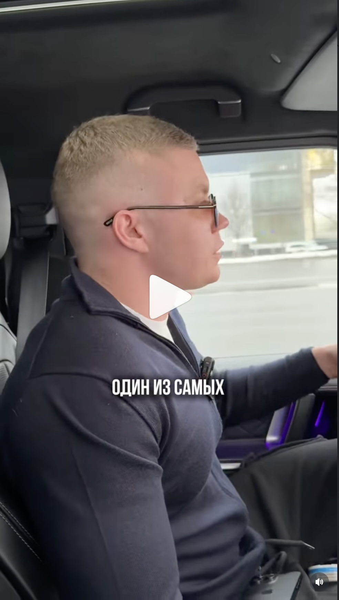
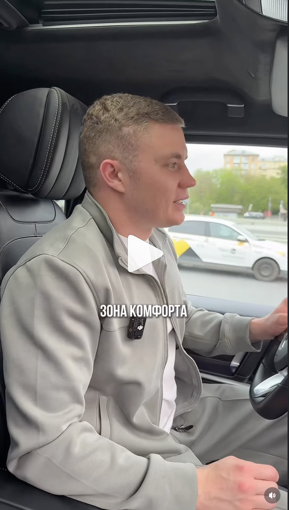
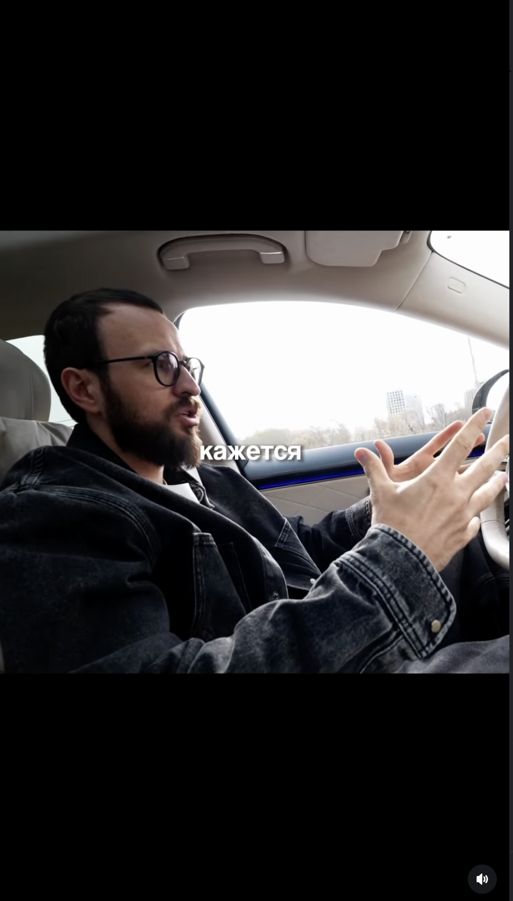

Банк тем из распаковки личности — для разгона в машине, на видео, в моменте. По каждой теме: заголовок, хук для начала ролика, что внутри и опорные факты. Под каждой темой — слот под референсы ракурса съёмки.
Я ни разу маме не сказал, что у меня нет денег. Хотя были месяцы, когда не было
Мама постарела на 10–15 лет за 2 года комы — фотографий тех лет до сих пор не показывают. Сейчас работает нянечкой в садике в Волгодонске. Когда уезжал на сборы — на вокзал не пускали, провожала с дома, всегда «берегите себя». Когда не было денег — никогда не жаловался: «мама, всё хорошо, не переживай».
Мой отец видел меня два раза в год — и это сделало меня тем, кто я есть
Отец 20+ лет работал в Москве — видел его «может, два-три раза в год». Сейчас тоже в Москве, до сих пор электрик. Никогда не поднимал руку и не повышал голос — хватало строго посмотреть. Был и папой, и тренером: снимал каждое соревнование на видеокамеру, дома вместе разбирали ошибки.
Я был в шаге от чемпионата мира. Два листка бумаги — и всё закончилось
За 2 месяца до чемпионата мира в Эстонии — приехал в Москву отметиться, вручили повестку. Через 2 дня в армию. Год простоя. После армии: «был номером один в своём весе — пришёл очень злой, восстановление было тяжёлым». Профессиональную карьеру не вернул.
Я работал по 16 часов и думал, что я неудачник. Это и был последний день перед тем, как всё изменилось
Возвращался домой и думал — «я неудачник». Посвятил всю жизнь спорту, а сейчас вкалываешь с 6 до 22:00. Зарплата 50–60. Квартира 30, проезд, еда — «не хватало молодому парню». Родителям ни слова — звонил и говорил «всё хорошо». Не помнит конкретный день когда уволился — «просто накипело».
Каждый раз, когда мне говорят что не в деньгах счастье — это говорит человек, у которого их нет
Прямая цитата из распаковки: «Когда есть деньги, ты можешь позволить себе хорошую еду, одежду, путешествовать, иметь квартиру и машину. Когда у тебя есть деньги — это и есть успех и признание. Ведь ты живёшь, а не выживаешь». Для него деньги = свобода. Без обиняков.
Меня учили: мужчина не плачет и не просит. Сейчас я понимаю — это работает только пока ты один
В распаковке два жёстких ответа: «Ты умеешь просить о помощи? — Никогда не прошу о помощи». «Можешь показать слабость? — Нет». Это про мужскую установку из дагестанской семьи и большого спорта. Можно раскрыть честно — это одновременно и сила, и ограничение.
У меня старший брат — чемпион мира. И я всю жизнь жил в его тени. Это и сделало меня тем, кто я есть
Брат Арсен — чемпион мира по борьбе. На одних турнирах оба выигрывали в своих весах, но хвалили всегда старшего. «Меня это, конечно, обижало и цепляло». Этот «второй номер в семье» и стал двигателем. Сейчас брат тренирует детей в Волгодонске.
Если бы не он — я бы до сих пор не знал, что могу
Первый тренер — Физулин Андрей Александрович. Поверил, взял под свою ответственность, поставил на ноги — после комы врачи запретили спорт. Когда родители закрыли дома и запретили заниматься — тренер сам приехал, уговорил. Жив, до сих пор тренирует.
Три книги, после которых я перестал работать на других
Три книги из распаковки в формате коротких рекомендаций — что взял из каждой и как применил:
Если бы я мог позвонить себе в 15 лет — я бы сказал одну вещь
Прямой ответ из распаковки: «Не бойся пробовать новое и ошибаться — это лучший способ учиться. Не всё сразу получится, но каждый шаг, даже неудачный, делает тебя сильнее. Цени друзей и семью, слушай советы, но всегда оставайся собой. Не сравнивай себя с другими — у каждого свой путь. Главное — не бояться мечтать и действовать».
Я считаю, что счастье в деньгах. Но это не делает меня мужчиной. Мужчиной меня делает другое
Прямая цитата: «несёт ответственность за слова и поступки, не ищет виноватых. Уважает себя и других. Развивается. Надёжен — его слово имеет вес. Эмоционально зрел — управляет чувствами, умеет слушать и поддерживать. Живёт с опорой на ценности, а не только ради выгоды».
Контраст с темой #05 — две стороны одной медали.
Я ненавижу враньё. Но один раз в жизни я врал. И сейчас понимаю — правильно сделал
У Артура жёсткая позиция против вранья: «всегда говорю прямо, что думаю. Иногда родным и близким это не нравится, но на правду не обижаются». Главная ошибка мужчин по его мнению — «которые не нагулялись, изменяют, а потом врут что любят». При этом сам признаётся в одном виде «лжи» — родителям всегда говорил «мама, всё хорошо», когда не было денег. Парадокс: правдоруб, но врал — и не жалеет.
Я скажу тебе честно — я перфекционист. И именно это сейчас мне больше всего мешает
Открытая исповедь. Артур признаёт за собой: «давайте снимать приколы, которые не снимаются». Много идей, много задумок — ничего не реализуется из-за стремления к идеальности. Прямо проговаривает: я в этом, я знаю что это убивает рост. Лучше сделать криво, чем не сделать идеально.
Первый раз в Таиланде. То, что я увидел в первый день, я запомнил на всю жизнь
В распаковке прямой ответ: «Любишь путешествовать? Какое место удивило больше всего? — Очень люблю. Удивило — первый раз когда был в Таиланде и увидел там ледибоев». Разгон истории: первая реакция, как понял, что это не девушки, культурный шок.
Когда я говорю, что катаюсь на сноуборде — никто не верит. Сейчас покажу
В распаковке: «Есть ли у тебя увлечение, о котором мало кто знает? — Да, мало кто знает, что я катаюсь на сноуборде». Контрастирует со спортивным образом борца. Лёгкий лайфстайл-формат, разнообразит ленту. Снимается прямо на склоне — с доской, в движении.
Один формат на все 15 тем — снимаем в машине, на ходу. Реализация: подключаем отдельного рилсмейкера или вашу SMM-щицу.



Вы едете и начинаете разгонять каждую тему.
Можно подготовиться к темам заранее. Можно — со своих слов, в моменте.
Главное — не тупить. Приобретать уверенность в том, о чём вы говорите и какую тему транслируете. Это супер важно.